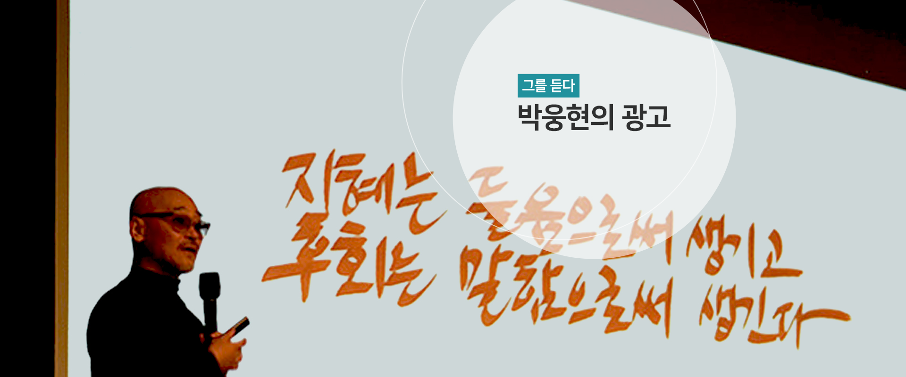
넥타이와 청바지는 평등하다
창의력이라는 말에는 위험부담이라는 뜻이 내포되어 있습니다. 새로운 것을 만들어내는 것이기 때문입니다. 예를 들어 광고를 제작할 때 남들이 다 하는 방식으로 '창의력'을 조금 포기하고 빅모델을 쓰면 안전합니다. 한국 사람들은 스타가 출연한 광고를 좋아하기 때문입니다. 그러나 그런 안전한 길을 버리고 '창의력'을 발휘해서 새로운 메시지를 가지고 사람들에게 다가갈 때는 여러 가지 어려움이 따릅니다. 소통이 잘 안 될 수 있습니다. '넥타이와 청바지는 평등하다'도 처음에는 그랬습니다. 그 광고가 만들어졌을 때 정말 부정적인 시각이 많았습니다. 무엇보다 내용이 어렵다는 것이었습니다.
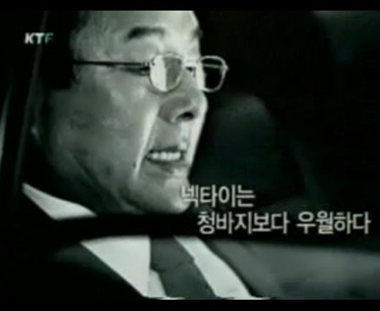
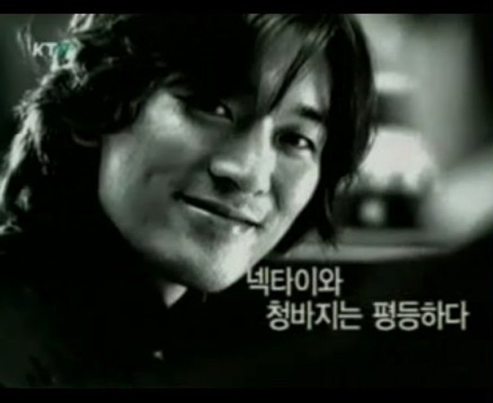
세상의 모든 지식, 네이버
'세상의 모든 지식, 네이버'는 조금 다른 방식의 위험을 무릅써야 했습니다. 만일 결재 과정이 복잡한 광고 회사였다면 이 광고는 만들어질 수 없었을지도 모릅니다. 광고주와의 소통 이전에 내부 결재를 얻기도 쉽지 않았을 겁니다. 텔레비전 광고는 '자막만으로는 안 된다'라는 통념 비슷한 것이 있거든요. 일반적으로는 맞는 말인지 모릅니다. 그러나 글자만으로 하는 것이 좋은 상황도 있을 수 있습니다. 맥락에 따라 달라지는 것이니까요. 게다가 이 광고 계획은 한두 편을 만들자는 것도 아니었습니다. 대개 한 편의 광고를 제작하는데 3억이 드는데, 전체 예산은 60억이었고, 50편을 만들자는 것이었습니다.
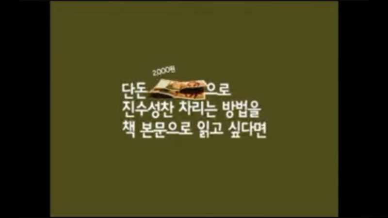
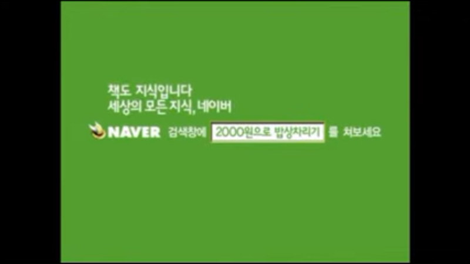
현대생활백서
이 광고를 만들 때의 생각은 우리가 광고주에게 만들어서 가져다준 책 '현대생활백서' 서문에 잘 나타나 있어요. 이처럼 생활의 중심에 휴대폰이 자리 잡은 것이 확실하다고 생각했어요. 그래서 가장 그럴듯한 에피소드를 찾아내기 위해 인터넷을 뒤졌죠. 일주일 만에 170여 건을 찾아냈어요. 그런데 너무 많아서 다 광고로 만들 수는 없었고, 먼저 책으로 만들었습니다 .광고주도 만족했지요. 우리는 이 책을 2,000원이라도 받고 서점에서 팔자고 했지만 광고주는 그냥 대리점에 배포했어요. 30만 부나 배포했는데, 그것도 모자라서 나중에 10만 부를 더 찍었으니 이 광고의 인기가 얼마나 대단했는지 쉽게 알 수 있죠.
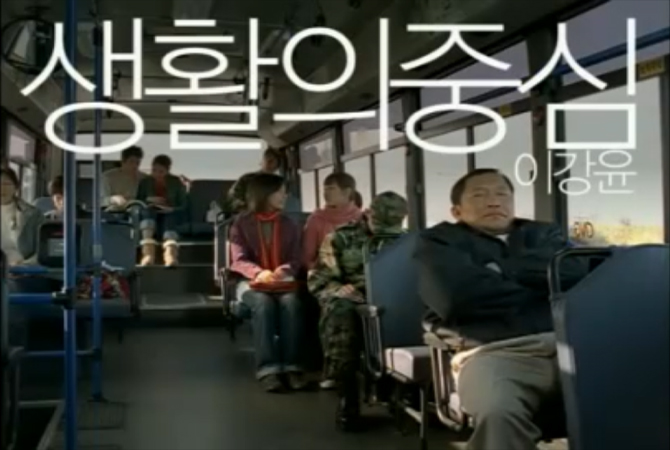
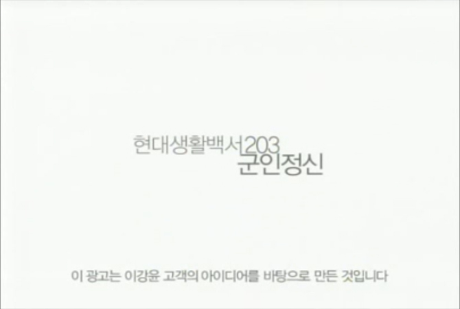
진심이 짓는다
좋은 건설회사라면 그들이 가진 환경에 대한 관심과 애정이 일반인의 그것과 다를 수가 없습니다. 모든 아파트가 사람들을 위한 것이고, 기업 역시 그 사람들이 만든 사회의 일원이기 때문입니다.
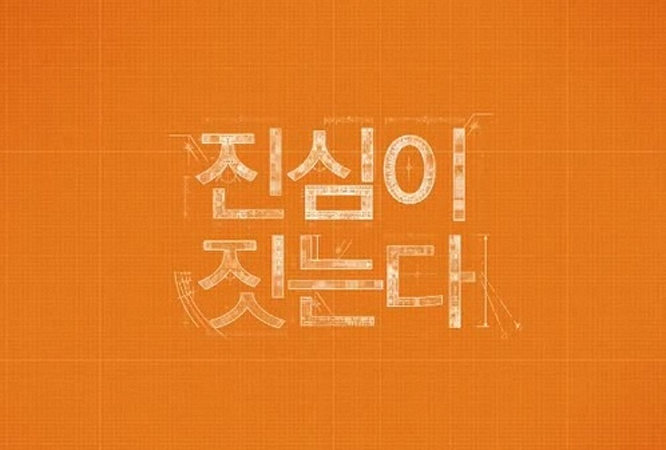
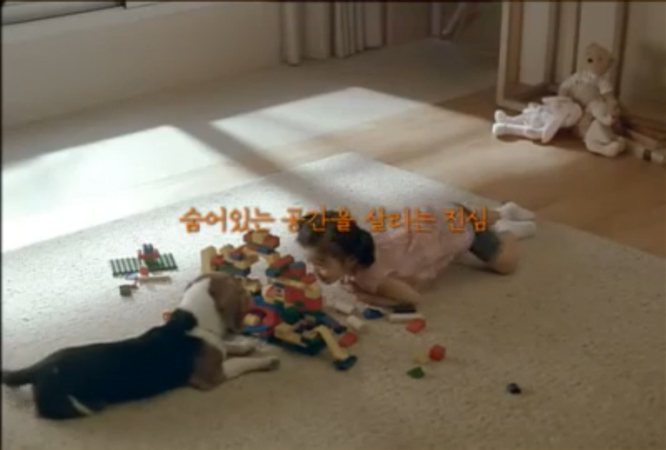
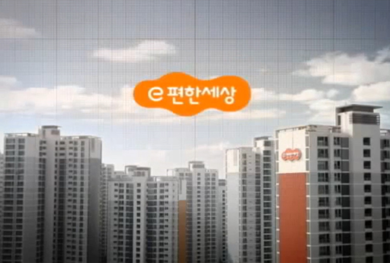
생각이 에너지다
이 광고는 SK 주식회사가 SK 에너지라는 이름으로 회사 이름을 바꾸면서 CEO가 대중들에게 주고 싶었던 이미지가 있었습니다. 그리고 대중들이 바라는 것도 있었습니다. 그런 것들을 조사하고 분석하지 않았다면 이런 광고는 만들어지지 않았을 겁니다.
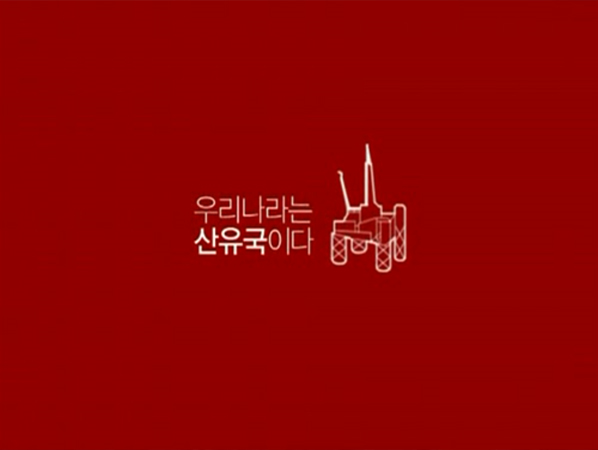
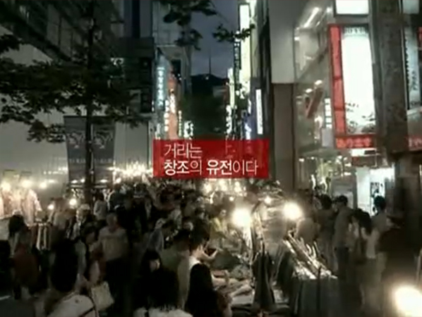
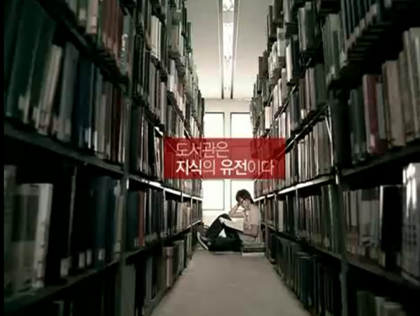
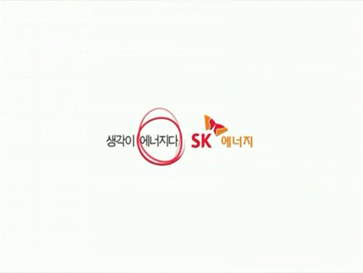
풀무원
이 광고는 그런 생각을 가지고 만든 겁니다. 메인 메시지 하나만 잡고 가자는 생각이었지요. "풀무원은 두부 전 제품에 유전자 변형 제품을 쓰지 않습니다." 이건 5초쯤 밖에 나오지 않습니다. 그러나 이 광고는 성공했습니다. 군더더기를 모두 발라내고 소비자가 듣고 싶은 말만 딱 한 것이 효과를 발휘했던 거지요. ... 텔레비전 광고를 만들면서 "풀무원은 전 제품에 유전자 변형 콩을 쓰지 않습니다", 하나만 말하기로 했고 회사를 위한 슬로건을 하나 만들었지요. 그게 "다르게 생각해서 바르게 만듭니다. 풀무원"이었습니다. 이렇게 만들어보니 딱 8초가 나오는 겁니다. 그래서 나머지 시간은 사람들의 시선을 잡는데 쓰기로 했습니다. 광고 앞 부분에서 호기심을 느낄 만한 소리를 들려주는 겁니다. 그런 다음에 "풀무원은 전 제품에 유전자 변형 콩을 쓰지 않습니다"라는 카피를 보여주는 거지요.
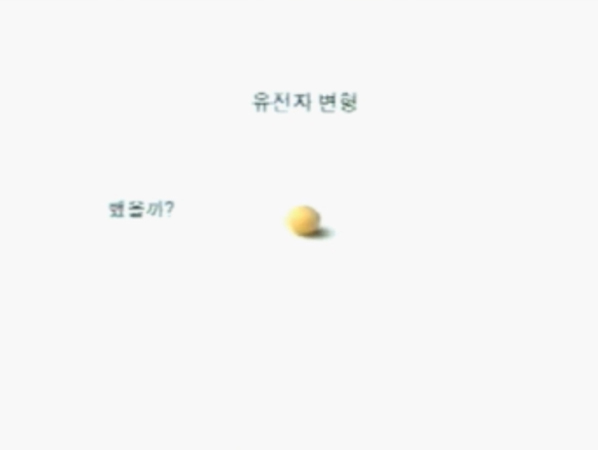
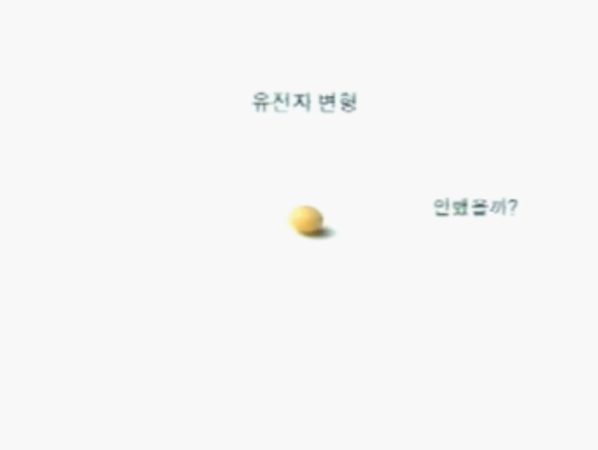
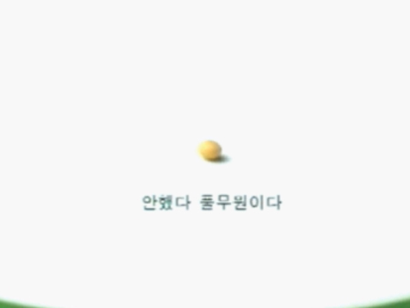
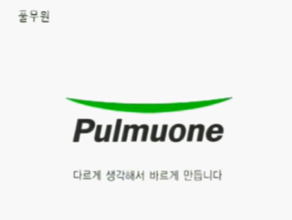